Trends
The Trends application allows you to work with trends that are recurring samples of data. In order to view the Trends application, you must have Show rights. If there is any change in the application rights, application refreshes and reflects the changes immediately.
Trends are of two types, online and offline.
Online Trending: In case of online trending, the trend data are uploaded continuously to the management station and are not saved in the automation station. Online trends record real-time values from your plant and display them graphically in a Trend View. The data values are sent to the Trends application upon each change of value. In case of online trending, an uninterrupted site connection with the management station is required. The measured values can be irretrievably lost when the site is interrupted during data recording. Therefore, online trend is not well-suited for long-term secure data recording. They can be used for real-time visualization of one or more process variables, usually for analysis or diagnosis purpose.
Offline Trends: In the case of offline trending, the trend data is saved locally to the trendlog object in the automation station and thereafter, uploaded to the management station either automatically or manually. The offline trend data is recorded and saved by the trendlog objects even when the management station is not connected. The automatic and manual transfer to the management station is done in the following situations:
Automatic:
- When the number of defined entries is reached
- When the maximum buffer size is reached
Manual:
- When the data transfer is triggered by a user in the management station
The precision for a 64 bit value is supported till 2E49 (15 digits). GmsBitString64 data type is not supported.
Trends in the Flex Client allow you to view trend charts, search for trend objects, start and pause trend data display, create and modify a trend view definition, define the trends, delete a trend view definition and an online trend log object, and view quality information and missing data.
This section provides background information on Trends in the Flex Client. For mobile Flex web application, see Use Trends in Mobile Flex. For procedures or workflows, see the step-by-step section.
Trends Workspace – Tile View
Trends are located under the Application View > Trends.
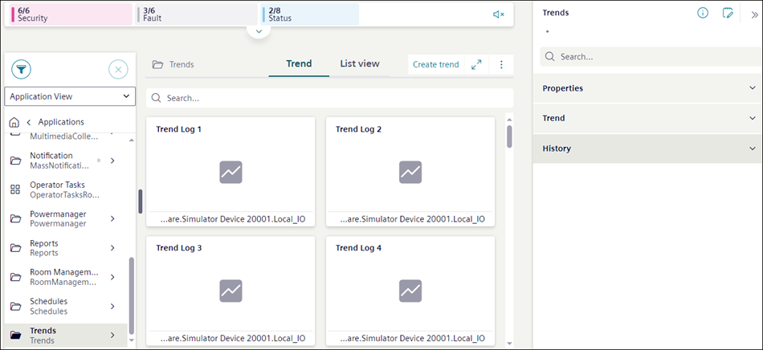
In System Browser:
- When you select Trends, the Trend tab displays all the related trend objects such as offline trends, online trends, and trend view definitions in a tile view.
- When you select a particular sub folder, the Trend tab displays all objects present in that sub folder.
You can create new trends or search for existing trends from the tile view.
On clicking , the Settings menu displays from which you can access the Trend settings dialog box. This dialog box provides options to define the settings which are applied to trends online log objects, offline log objects and trend view definitions.
Trend Settings
The Trend settings dialog box allows you to define the settings, which are applied to trends online log objects, offline log objects and trend view definitions. In case of trend view definitions, these settings are applied only during creation of new trend view definitions.

NOTE:
Trend settings are saved per user and display the user-specific settings.
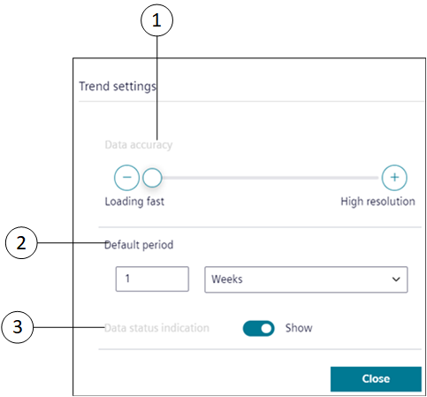
|
1 | Data accuracy | Displays the number of samples per series, based on the selection anywhere between Loading fast to High resolution. By default, the number of samples saved is 100. |
2 | Default period | Allows to specify the time range, for which the trend data displays in the Trend View. |
3 | Data status indication | Select Show to display the quality indication area of rectangle shape on the Trend View. The area is highlighted with red color, in order to indicate a quality issue (a problem with the data point). |
Trends Workspace – View Mode
The View mode allows you to view the complete chart preview of the selected trend view definition, online or offline trend log objects.
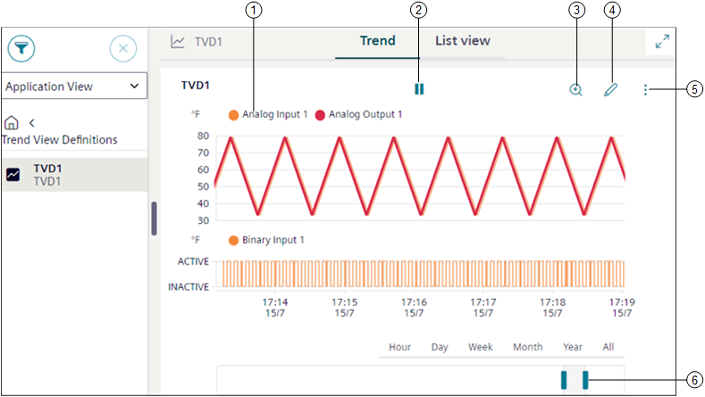
|
1 | Legend | Displays information on the objects present in the trend view definition. You can specify the type of information to be displayed by clicking the Layout setting button on the Horizontal Navigation Bar (see Horizontal Navigation Bar in User Interface Basics) and selecting the respective Text representation. Depending on the selected Text representation the following type of object information displays in the legend: |
2 | | Behaves as a toggle button and stops trend when you click . To restart logging trends, click . |
3 | | Displays the chart data in the zoom mode for the selected time interval. See Zooming Data in Trends Step-by-Step. |
4 | | Displays the trends workspace in the Edit mode. |
5 | | Displays the following options:
|
6 | Pre-defined time ranges | Displays the trend series according to the selected time range. |
Trends Workspace – Edit Mode
The Edit mode allows you to modify the properties of the selected trend view definition, online or offline log object.
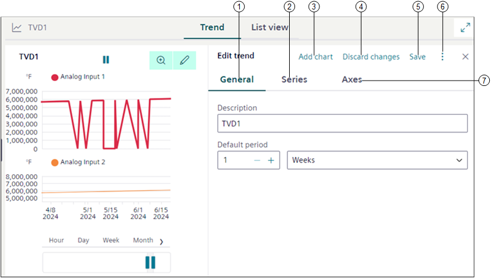
|
1 | General | Allows you to modify properties, such as trend name or time period, for which you want the data to reflect in the chart, chart properties. See General Properties for additional information. |
2 | Series | Allows you to add new data points and modify the look and feel of the chart. See Series Properties for additional information. |
3 | Add chart | Creates new chart and adds it under Series or Axes tab. |
4 | Discard changes | Discards the changes that are made in the Trend view definition. |
5 | Save | Saves the selected trend view definition. If you add new data points to an online or offline log object, then a new trend view definition is created. |
6 | | Provides options to save the trend view definition with a new name or discard the changes. |
7 | Axes | Allows you to specify the maximum and minimum range for the Left Y-axis or Right Y-axis which displays in the Trend view. |
General Properties
Allows you to modify properties such as the Description and the time period for which you want the data to reflect in the chart, and chart properties.
The General tab displays following fields:
|
1 | | Displays the Save as option that allows you to create a Trend View Definition. For related procedure, see Create a Trend View Definition from Online or Offline Trend Log Objects. |
2 | Description | Allows you to enter the description for a trend view definition. |
3 | Default period | Allows you to specify the time range, for which the trend data should display in the Trend View. |
Series Properties
Allows you to modify properties, corresponding to the individual trend series of a trend view definition.
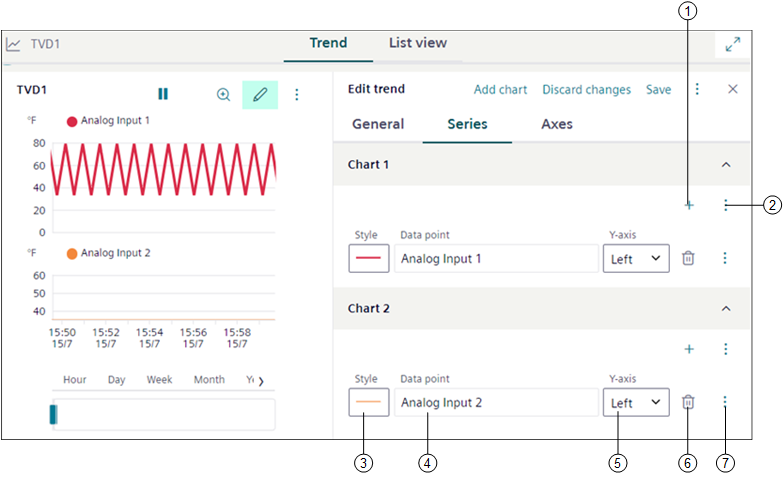
|
1 | | Displays the Select data point dialog box that allows you to add one or more data points. |
2 | | Provides options to add and remove sub charts. |
3 | Style | Allows you to select the appropriate style properties like Color, Width, Dash Type, Marker, and Interpolation for each trend series. See Style Properties for more information. |
4 | Data point | Displays the description of the data point. You can also enter a name for trend series in the text box below, which is stored as a description in the current language of the user. |
5 | Y-Axis | Indicates the y-axis where the data point is scaled (left or right). |
6 | | Allows you to remove the trend series from the trend view definition only. |
7 | | Displays the properties of either a trended object or a trend log object in the right panel below the Properties tab, on the appropriate selection. If you reduce the size of the Series tab, the Delete option , Left Y Axis, and Right Y Axis display as menu options when you select . Additionally, the following options display:
|
|
Style Properties | |
Color | 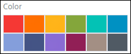 |
Width | 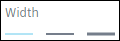 |
Dash type | 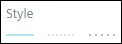 |
Marker | 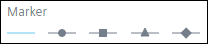 |
Interpolation | 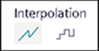 |
Axes Properties
Allows you to specify the Max or Min range for the Left Y-axis or Right Y-axis which displays in the Trend view.
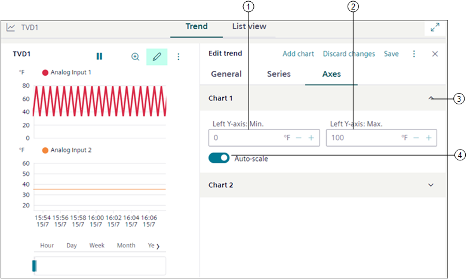
|
1 | Left/Right Y-axis: Min. | Allows you to specify the minimum range for the left/right y-axis, which displays in the Trend View. |
2 | Left/Right Y-axis: Max. | Allows you to specify the maximum range for the left/right y-axis, which displays in the Trend View. |
3 | Chart | Displays the chart added to the trend view definition. |
4 | Auto-scale | Displays scale of the y-axis, based on the trend series data. A minimum and maximum range must be defined if auto-scale is disabled. |
Export file
Exports the trend data according to the selected sampling rate in a PDF, CSV, or Excel format.
1 | Sampling rate | Select any of the following type to export the trend data: NOTE: The Sampling rate options are displayed based on selected time range.
|
2 | File type | Select any of the following file types to export the trend data:
|
3 | Export | Downloads the trend report in the selected format. NOTE: The aggregated data in the exported file is calculated based on the standard ISO date-time format. |
Subcharts
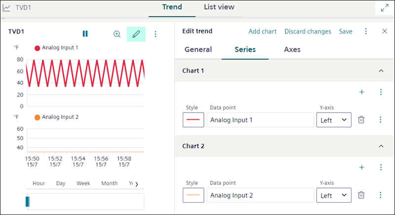
You can have multiple charts added to the main chart of your trend view definition using Subcharts. This concept allows you to distribute the trend series with different units and with different data points across multiple charts rather than overloading the main chart. It also allows you to have a look at the multiple trend series in a common view thereby improving the readability of chart data.
Following are the features of Subcharts:
- For all Subcharts, a single time bar displays. If you change the default period in the Edit mode, then the same time is reflected for all the Subcharts in the View mode.
- When you zoom in or zoom out a particular area of any Subchart, then the result of the zoom operation is applicable to all the Subcharts in the trend view definition.
- When you select any of the following options (hour, day, month, year, all) on the predefined time ranges in the View mode, the selected option is applied to all Subcharts present in trend view definition.
- When you hide all the trend series, the Subcharts do not display any data and the time bar is hidden.
- When you delete a data point from a particular Subchart, then the data point is removed from that Subchart only and not from any other Subchart. Similarly, when you add a data point to a particular Subchart, then the data point is allocated to that specific Subchart only.
- You can add the below data points in one subchart considering following criteria:
- For selection of data points in one subchart, select either one of the data point (analog or binary or multistate).
- Maximum 10 analog data points per subchart.
- 2 axis (left and right together) with 1 unit value per axis for example ℃ or ℉.
- 1 multistate data point per subchart.
- 1 binary data point per subchart.
- For example, assume that you have created a Subchart and selected the following combination of data points and trend log objects:
- 2 analog inputs with same unit (℃)
- 2 analog inputs with same unit (℉)
- 1 analog input with unit (%)
- 1 multistate input point
- 1 binary input point
- Consider the above example, the number of sub charts and their points will be as follows:
- Subchart 1 – 2 analog input points with ℃ as unit and 2 analog input points with ℉ as unit. This is because 1 Subchart can have a maximum 2 axis (left axis with one data point and right axis with another data point).
- Subchart 2 – 1 analog input point with % as unit requires other Subchart as the unit of analog input is different and you can have only two different units in 1 Subchart.
- Subchart 3 – 1 multistate input point.
- Subchart 4 – 1 binary input point.
Quality Attributes
The Trend View can display a number of state attributes, referred to as quality attributes, along with the trend data. These enable you to identify problems with the data point being recorded and assist with the diagnosis of plant conditions. The quality attributes display as a tooltip when you position your mouse pointer over a trend series. Only the highest priority displays in the Trend View if several states are active. In order to display the quality attributes, you must ensure that the Show Quality option for the series to which you want to view the quality information is selected in the management station. The Trend View also displays a quality indication area of rectangle shape, which is highlighted with the red color in order to indicate a quality issue (a problem with the data point).
The following is a list of the quality attributes:
|
Item | Name | Description |
| Error logging data | Error reading data value from the monitored object |
| Reliability fault | Indicates that the value of the Trendlog object is no longer reliable. |
| Faulty | Indicates that a data point error exists in the Trendlog object (values may not be usable for follow-on evaluation) |
| Overridden | Indicates that the data point on a module is overridden. |
| Out of service | Indicates that the Out of Service property is switched on. |
| Log Enabled/Disabled | Indicates that the Trendlog object is enabled. |
| Log interrupted | Indicates that the automation station has been set to state Log_interrupted in the trend buffer (for example: in the event of a power outage, application program stop, change of data point log type). This may cause trend data from not being logged. |
| Buffer purged | Indicates that the buffer in the Trendlog object is deleted. |
| Buffer full | Indicates that the Trendlog buffer is full. |
| Time shift | Indicates that the time in the automation station was changed. |
| Connected/Disconnected | Indicates that no connection exists to the logged data point. |
| Reduced data | Indicates that the logged data may be huge and needs to be reduced before displaying. |
| Added/Modified data | Indicates that the data has been added or modified manually. |
Validation in Trends
When you set a Trend View Definition, Trend Log Online, Trend Log Offline target object with Validation profile = Enabled, Monitored or Supervised combined with the Four Eyes check box option then you are prompted to validate the actions performed to the target object.
Some examples of the performed actions are: Modify, Delete, and Manual upload (in case of Trend Log Offline object).
When the object is modified or updated, all the changes are logged into the Audit Trail log of the validated object and the object version increments are recorded and stored under the right panel, in the History tab.
NOTE: Users with OIDC or software accounts are not allowed to validate Trend View Definition, Trend Log Online, Trend Log Offline objects.
The following table displays applicable Trend View Definition, Trend Log Online, and Trend Log Offline target objects with their respective actions:
Validation Profile Target Objects | Action | Validation Output |
Trend View Definition |
| On saving the changes, Validation required dialog box with corresponding input field is displayed based on the Validation profile. |
Trend Log Online Object | Delete Trend Log Online Object | |
Trend Log Offline Object | Manual upload of Trend Log Offline Object NOTE: For a trend Log Offline object, when trend data is uploaded by using Manual upload button, automatic uploading of trend data is not triggered. |
Following table displays some more scenarios where multiple objects are validated and their corresponding validation output:
# | Scenarios for Trend View Definition | Validation Output | |
1 | Trend View Definition is not validated | Commanded Output (Trend Log Offline Object) is not validated | Validation required dialog box is not displayed. |
Commanded Output (Trend Log Offline Object ) validated | On modification of Trend Log Offline Object (that is when trend data is uploaded by using Manual upload button), Validation required dialog box with the highest Validation profile is displayed. | ||
2 | Trend View Definition is validated | Commanded Output (Trend Log Offline Object ) is not validated | On modification of Trend Log Offline Object (that is when trend data is uploaded by using Manual upload button), Validation required dialog box is not displayed. |
Commanded Output (Trend Log Offline Object ) is validated | On modification of Trend Log Offline Object (that is when trend data is uploaded by using Manual upload button), Validation required dialog box with the highest Validation profile is displayed. | ||